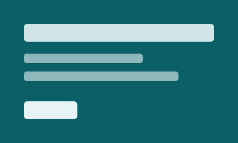

Algoritma ve sözde kod çalışması
Problem çözme adımlarını ve başı-sonu belli mantığı sıralı ve koşullu yapılarla adım adım sözde kod olarak ifade ettiğim çalışma.
Ne öğrendim: Kodu yazmaya başlamadan önce mantıksal adımları netleştirmenin hataları en baştan azalttığını öğrendim.
GitHub bağlantısı (Algoritma ve sözde kod çalışması)